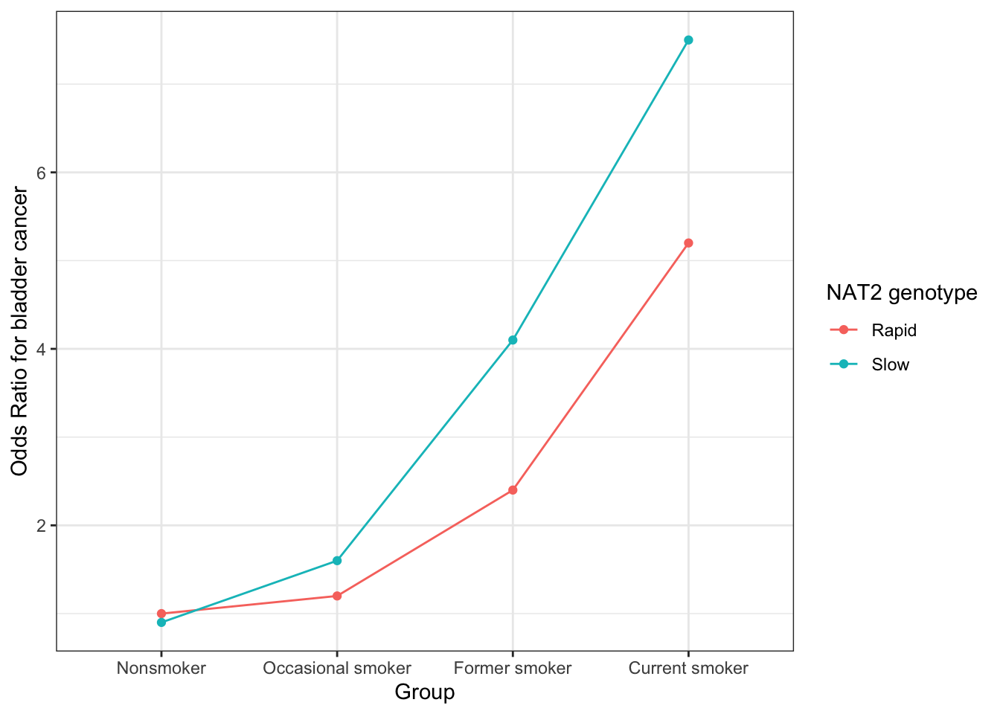
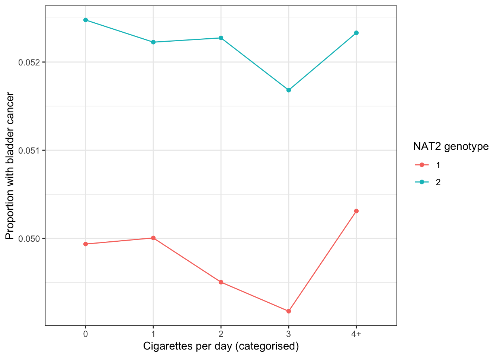

This is the relationship between smoking and bladder cancer risk stratified by NAT2 genotype (rapid vs slow acetylators).
NAT2 and bladder cancer risk
library(dplyr)
Attaching package: 'dplyr'
The following objects are masked from 'package:stats':
filter, lag
The following objects are masked from 'package:base':
intersect, setdiff, setequal, union
library(ggplot2)ss <-tibble(Group =rep(factor(c("Nonsmoker", "Occasional smoker", "Former smoker", "Current smoker"), levels =c("Nonsmoker", "Occasional smoker", "Former smoker", "Current smoker")), times =2),NAT2_group =rep(c("Rapid", "Slow"), each =4),OR =c(1.0, 1.2, 2.4, 5.2, 0.9, 1.6, 4.1, 7.5)) ggplot(ss, aes(x = Group, y = OR, group = NAT2_group, color = NAT2_group)) +geom_line() +geom_point() +theme_bw() +labs(y ="Odds Ratio for bladder cancer", color ="NAT2 genotype")

The hypothesised mechanism is that slow acetylators have a reduced ability to detoxify carcinogens in tobacco smoke, leading to higher levels of DNA damage and increased bladder cancer risk.
Here we will develop a simulation to examine if an interaction is required at all to explain the finding. Our model will be
\[
\text{logit}(P(Y=1)) = \beta_0 + \beta_{H,Y} H + E_Y
\]
\[
H = \beta_{S,H} C + \beta_{N,Y} N + \beta_{U,H} U + E_H
\]
\[
N = \beta_{G_N,N} G_N + E_N
\]
Smoking is represented as cigarettes per day, where G_I influences ever/never smoking and G_C influences number of cigarettes smoked per day among smokers.
\(H\) is the level of heterocyclic amines / carcinogens
\(S\) is smoking initiation (0 for never, 1 for ever)
\(C\) is the number of cigarettes smoked per day
\(Y\) is bladder cancer status (0/1)
\(G_1\) is the NAT2 genotype (0 for rapid, 1 for slow)
The 8:18415371:A:G variant (rs1495741) is an eQTL for NAT2 expression and is also associated with bladder cancer risk (https://www.ebi.ac.uk/gwas/variants/rs1495741).
dgm <-function(b_0, b_hy, b_uy, b_sh, b_nh, b_gcc, b_gis, b_gnn, b_us, b_uc, b_uh, n) { U <-runif(n) Gc <-rbinom(n, 2, 0.5) Gi <-rbinom(n, 2, 0.5) Gn <-rbinom(n, 1, 0.5) +1 logit_S <- b_gis * Gi + b_us * U +rnorm(n) S <-rbinom(n, 1, exp(logit_S) / (1+exp(logit_S))) C <-ifelse(S ==0, 0, rpois(n, lambda = b_gcc * Gc + b_uc * U)) N <- b_gnn * Gn +rnorm(n) H_intake <- b_sh * C + b_uh * U +rnorm(n) H <- H_intake * N * b_nh logit_p <- b_0 + b_hy * H + b_uy * U p <-exp(logit_p) / (1+exp(logit_p)) Y <-rbinom(n, 1, p) Ccat <-cut(C, breaks=c(-Inf, 0, 1, 2, 3, Inf), labels=c("0", "1", "2", "3", "4+")) tibble(Y = Y, H = H, U = U, S = S, C = C, N = N, Gc = Gc, Gi = Gi, Gn = Gn, Ccat = Ccat)}estimation_gc2005 <-function(data) {# Estimate the effect of smoking on bladder cancer risk stratified by NAT2 genotype model <-glm(Y ~ C * Gn, data = data, family = binomial)summary(model)}dat <-dgm(b_0 =-3,b_hy =0.5,b_uy =0,b_sh =0.4,b_nh =0.2,b_gcc =1.0,b_gis =1.0,b_gnn =1.0,b_us =0,b_uc =0,b_uh =0,n =1000000)dat
Call:
glm(formula = Y ~ C * Gn, family = binomial, data = data)
Coefficients:
Estimate Std. Error z value Pr(>|z|)
(Intercept) -3.004566 0.017180 -174.886 < 2e-16 ***
C 0.013845 0.012373 1.119 0.2631
Gn 0.020208 0.010826 1.867 0.0619 .
C:Gn 0.033749 0.007703 4.381 1.18e-05 ***
---
Signif. codes: 0 '***' 0.001 '**' 0.01 '*' 0.05 '.' 0.1 ' ' 1
(Dispersion parameter for binomial family taken to be 1)
Null deviance: 401845 on 999999 degrees of freedom
Residual deviance: 401525 on 999996 degrees of freedom
AIC: 401533
Number of Fisher Scoring iterations: 5
table(dat$Ccat)
0 1 2 3 4+
635304 173044 109178 51544 30930
plot_dat <-function(dat) {ggplot(dat, aes(x = Ccat, y = Y, group = Gn, color =factor(Gn))) +geom_line(stat ="summary", fun ="mean") +geom_point(stat ="summary", fun ="mean") +labs(x ="Cigarettes per day (categorised)", y ="Proportion with bladder cancer", color ="NAT2 genotype") +theme_bw()}
Call:
glm(formula = Y ~ C * Gn, family = binomial, data = data)
Coefficients:
Estimate Std. Error z value Pr(>|z|)
(Intercept) -2.9973872 0.0078890 -379.945 <2e-16 ***
C -0.0012968 0.0052537 -0.247 0.805
Gn 0.0515205 0.0049547 10.398 <2e-16 ***
C:Gn -0.0004443 0.0032996 -0.135 0.893
---
Signif. codes: 0 '***' 0.001 '**' 0.01 '*' 0.05 '.' 0.1 ' ' 1
(Dispersion parameter for binomial family taken to be 1)
Null deviance: 2017456 on 4999999 degrees of freedom
Residual deviance: 2017296 on 4999996 degrees of freedom
AIC: 2017304
Number of Fisher Scoring iterations: 5
ggplot(dat, aes(x = Ccat, y = Y, group = Gn, color =factor(Gn))) +geom_line(stat ="summary", fun ="mean") +geom_point(stat ="summary", fun ="mean") +labs(x ="Cigarettes per day (categorised)", y ="Proportion with bladder cancer", color ="NAT2 genotype") +theme_bw()

sessionInfo()
R version 4.6.0 (2026-04-24)
Platform: aarch64-apple-darwin23
Running under: macOS Sequoia 15.2
Matrix products: default
BLAS: /Library/Frameworks/R.framework/Versions/4.6/Resources/lib/libRblas.0.dylib
LAPACK: /Library/Frameworks/R.framework/Versions/4.6/Resources/lib/libRlapack.dylib; LAPACK version 3.12.1
locale:
[1] en_US.UTF-8/en_US.UTF-8/en_US.UTF-8/C/en_US.UTF-8/en_US.UTF-8
time zone: Europe/London
tzcode source: internal
attached base packages:
[1] stats graphics grDevices utils datasets methods base
other attached packages:
[1] ggplot2_4.0.3 dplyr_1.2.1
loaded via a namespace (and not attached):
[1] vctrs_0.7.3 cli_3.6.6 knitr_1.51 rlang_1.2.0
[5] xfun_0.57 otel_0.2.0 generics_0.1.4 S7_0.2.2
[9] jsonlite_2.0.0 labeling_0.4.3 glue_1.8.1 htmltools_0.5.9
[13] scales_1.4.0 rmarkdown_2.31 grid_4.6.0 evaluate_1.0.5
[17] tibble_3.3.1 fastmap_1.2.0 yaml_2.3.12 lifecycle_1.0.5
[21] compiler_4.6.0 RColorBrewer_1.1-3 htmlwidgets_1.6.4 pkgconfig_2.0.3
[25] farver_2.1.2 digest_0.6.39 R6_2.6.1 utf8_1.2.6
[29] tidyselect_1.2.1 pillar_1.11.1 magrittr_2.0.5 withr_3.0.2
[33] tools_4.6.0 gtable_0.3.6